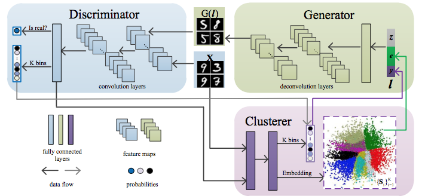
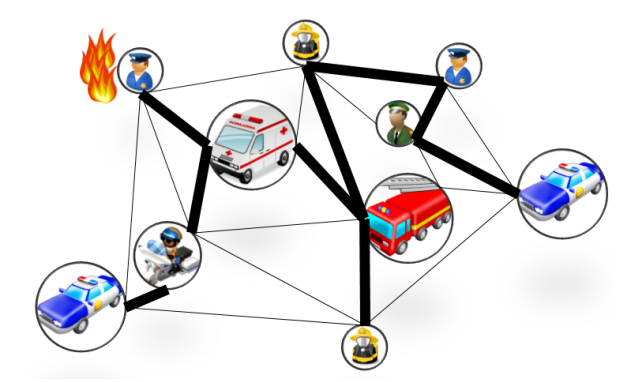

About Me
I am a research scientist in the Creative Vision team at Snap Research. I received my PhD degree in EECS at UC Merced under the advisement of Prof. Ming-Hsuan Yang in 2020. I got my M.S. degree in the Ming Hsieh Department of Electrical Engineering from Univeristy of Southern California in 2016, and my B.S. degree in the Department of Electrical Engineering from National Taiwan University.
My research interests include Computer Vision and Machine Learning, particularly in generative models and content creation. Here is my CV.
News
- library_books 01/2023: One paper is accepted to ICLR 2023 (oral)
- library_books 07/2022: Three papers are accepted to ECCV 2022
- library_books 12/2021: Two papers are accepted to CVPR 2022
- library_books 12/2021: One paper is accepted to ICLR 2022
- library_books 07/2020: Joining Snap Research!
- library_books 07/2020: Four papers are accepted to ECCV 2020 (1 spotlight)
- library_books 12/2019: One paper is accepted to ICLR 2020 (spotlight)
- library_books 12/2019: One paper is accepted to IJCV 2019
- library_books 09/2019: One paper is accepted to NeurIPS 2019
- library_books 05/2019: Google Internship, MTV
- library_books 04/2019: One paper is accepted to ICIP 2019
- library_books 02/2019: One paper is accepted to CVPR 2019
- library_books 12/2018: Google Internship, SNV
- library_books 07/2018: Two papers are accepted to ECCV 2018 (1 oral)
- library_books 05/2018: Nvidia Internship, Santa Clara Audio-Visual Modeling
- library_books 07/2017: One paper is accepted to ICCV 2017
- library_books 05/2017: Google Internship, MTV Video Highlights / Video Summarization
- library_books 08/2016: Start my PhD at UC Merced
Publications


Make-A-Story: Visual Memory Conditioned Consistent Story Generation
Tanzila Rahman, Hsin-Ying Lee, Jian Ren, Sergey Tulyakov, Shweta Mahajan, Leonid Sigal
arxiv


3D Generation on ImageNet
Ivan Skorokhodov, Aliaksandr Siarohin, Yinghao Xu, Jian Ren, Hsin-Ying Lee, Peter Wonka, Sergey Tulyakov
ICLR 2023 (oral)


Continuous and Diverse Image-to-Image Translation via Signed Attribute Vectors
Qi Mao, Hung-Yu Tseng, Hsin-Ying Lee, Jia-Bin Huang, Siwei Ma, Ming-Hsuan Yang
IJCV 2020
RetrieveGAN: Image Synthesis via Differentiable Patch Retrieval
Hung-Yu Tseng, Hsin-Ying Lee, Lu Jiang, Ming-Hsuan Yang, Weilong Yang
ECCV 2020
Neural Design Network: Graphic Layout Generation with Constraints
Hsin-Ying Lee, Weilong Yang, Lu Jiang, Madison Le, Irfan Essa, Haifeng Gong, Ming-Hsuan Yang
ECCV 2020 (spotlight)

Dancing to Music
Hsin-Ying Lee, Xiaodong Yang, Ming-Yu Liu, Ting-Chun Wang, Yu-Ding Lu, Ming-Hsuan Yang, Jan Kautz
NeurIPS 2019
Self-supervised Audio Spatialization with Correspondence Classifier
Yu-Ding Lu, Hsin-Ying Lee, Hung-Yu Tseng, Ming-Hsuan Yang
ICIP 2019


Diverse Image-to-Image Translation via Disentangled Representations
Hsin-Ying Lee*, Hung-Yu Tseng*, Jia-Bin Huang, Maneesh Kumar Singh, and Ming-Hsuan Yang
ECCV 2018 (oral)
IJCV 2019

Sub-GAN: An Unsupervised Generative Model via Subspaces.
Jie Liang, Jufeng Yang, Hsin-Ying Lee, Kai Wang, and Ming-Hsuan Yang
ECCV 2018
Video Highlights Using Retention Stats
This project is done during the intership at Google. We explore a Youtube statistics - Retention Stats as an auxiliary training signal for video highlights extraction. Retention stats is a Youtube metric that takes multiple behaviors into consideration including when do audiences start, when do they quit, which parts are viewed multiple times and which parts are skipped frequently. We focus on sports highlights since they often share more consistent consensus among audience than other categories.
Hsin-Ying Lee, Min-Hsuan Tsai, Zheng Sun, and Weilong Yang
Unsupervised Representation Learning by Sorting Sequences
This work proposes a self-supervised sequence sorting task to learn image representation using unlabeled videos.
Hsin-Ying Lee, Jia-Bin Huang, Maneesh Kumar Singh, and Ming-Hsuan Yang
ICCV 2017
Graph-Based Logic Bit Slicing for Datapath-Aware Placement
This work proposes a balanced edge-cover algorithm to completely slice any datapath, and an SA-based
refinement process to exploit the bit-slice paths as an alignment guidance to placers.
Chau-Chin Huang, Bo-Qiao Lin, Hsin-Ying Lee, Yao-Wen Chang, Kuo-Sheng Wu, and Jun-Zhi Yang
DAC 2017
Soft-Segmentation Guided Object Motion Deblurring
This work aims to use a maximum a posterior formulation in which soft-segmentation is
incorporated for object layer estimation to jointly estimate object segmentation and camera
motion.
Jinshan Pan, Zhe Hu, Hsin-Ying Lee, and Ming-Hsuan Yang
CVPR 2016
Detailed-routability-driven analytical placement for mixed-size designs with technology and region constraints
This work aims to participate in the 2015 ISPD Blockage-Aware Detailed Routing-Driven
Placement Contest, which targeted at detailed-routability-driven analytical placement for
mixed-size design.
Chau-Chin Huang, Hsin-Ying Lee, Bo-Qiao Lin, Sheng-Wei Yang, Chin-Hao Chang, Szu-To Chen, Yao-Wen Chang
ICCAD 2015

Bio-inspired proximity discovery and synchronization for D2D communications
This work aims to propose a distributed mechanism for Device-to-Device (D2D) communication, which achieves proximity discovery and synchronization simultaneously
Shih-Lung Chao, Hsin-Ying Lee, Ching-Chun Chou, Hung-Yu Wei
IEEE communications letters, 2013
Education

Ph.D. in EECS, University of California, Merced, California, USA
Sep. 2016 - May. 2020
M.S. in Electrical Engineering, University of Southern California, Los Angeles, California, USA
Sep. 2015 - Aug. 2016

B.S. in Electrical Engineering, National Taiwan University, Taipei, Taiwan
Sep. 2010 - Jun. 2014